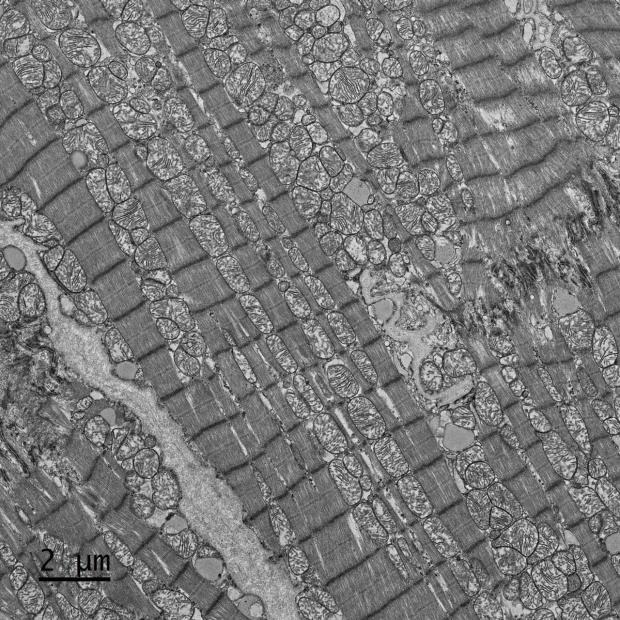
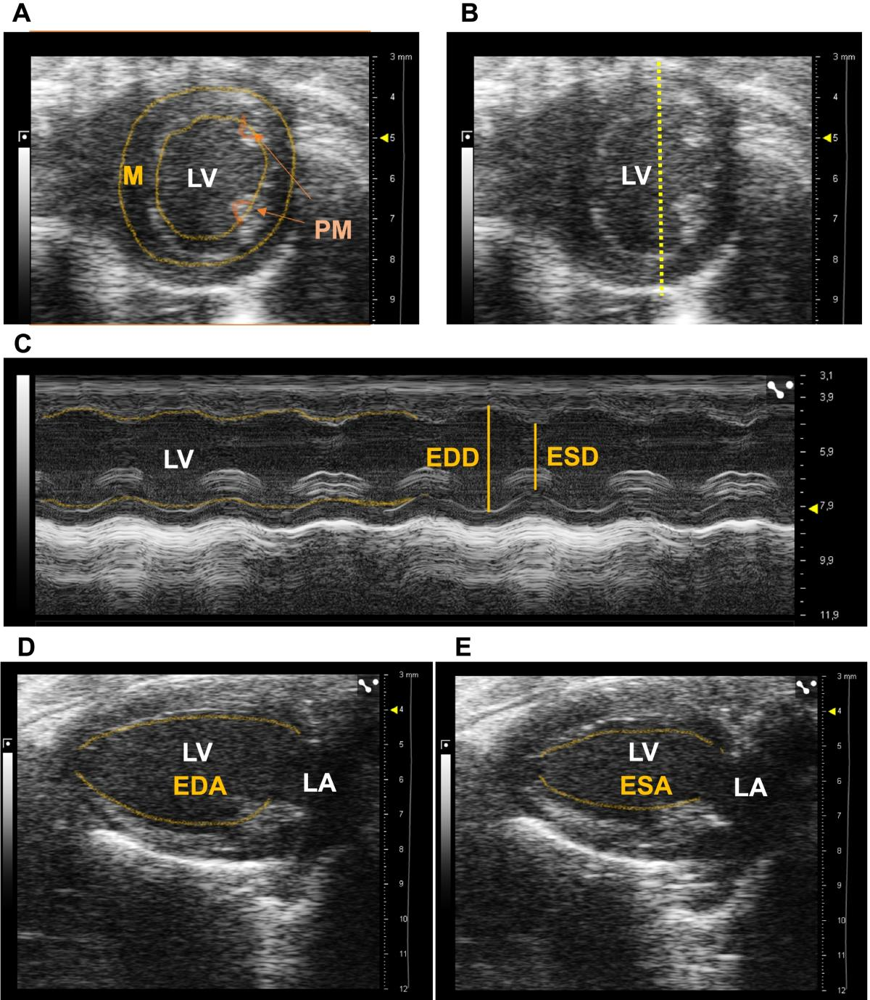
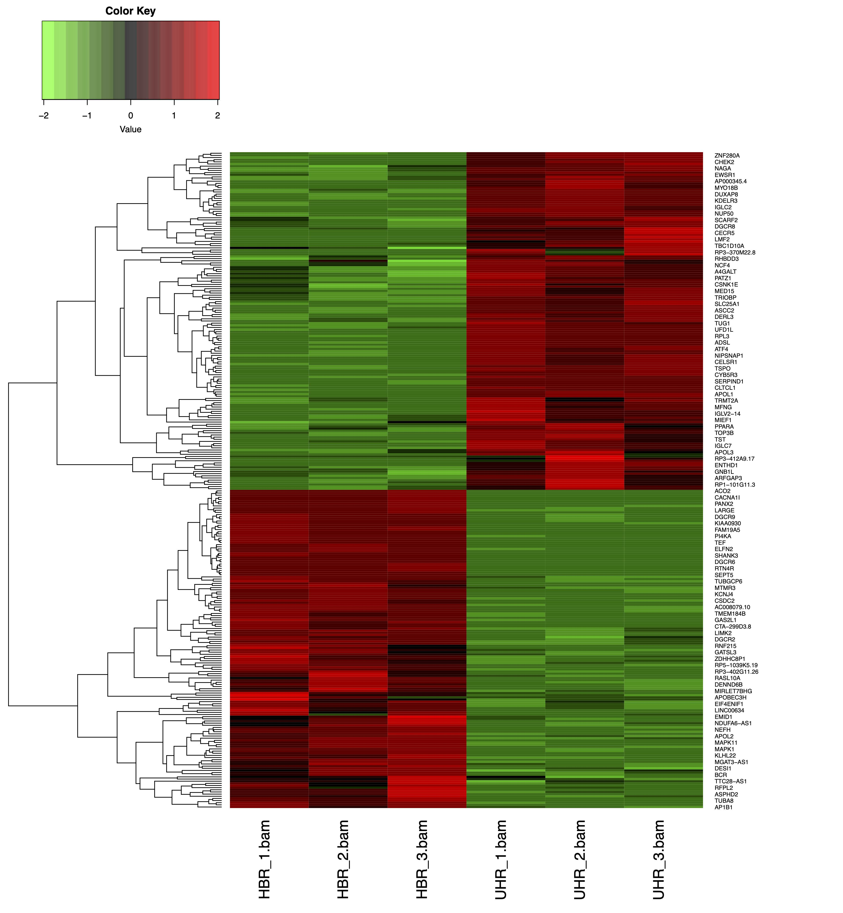

Mitochondrial Biology and Cardiac Metabolism
Investigating mitochondrial protein translation, respiratory function, and metabolic adaptation in cardiovascular disease.
My research connects mitochondrial biology, cardiovascular disease, and computational genomics to investigate mechanisms of cardiac dysfunction and potential therapeutic pathways.

Investigating mitochondrial protein translation, respiratory function, and metabolic adaptation in cardiovascular disease.

Studying HFpEF, HFrEF, and cardiac remodeling through preclinical disease models and integrative physiological phenotyping.

Integrating RNA-seq and Hi-C analyses to characterize molecular responses and investigate candidate therapeutic pathways.